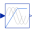
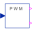

AIMC_InverterDriveTest example: AsynchronousInductionMachineSquirrelCage inverter drive |
|
Diagram
{kind=link}
Information
This information is part of the Modelica Standard Library maintained by the Modelica Association.
This is a model of a complete inverter drive comprising:
- a grid model and a line choke
- a diode rectifier
- a buffer capacitor
- a switching inverter
- a pulse width modulation
- a voltage/frequency characteristic
- the reference frequency ramped up
- an induction machine with squirrel cage
- a load inertia and quadratic speed dependent load torque (like a fan or pump)
Please note: Be patient, two switching devices cause many event iteratons which cost performance.
Note that due to the voltage drop the voltage at the machine can't reach the full voltage which means torque reduction.
Default machine parameters are adapted to nominal phase voltage 400 V and nominal phase current 25 A.
Parameters (10)
| VNominal |
Value: 400 Type: Voltage (V) Description: Nominal RMS voltage per phase |
|---|---|
| fNominal |
Value: 50 Type: Frequency (Hz) Description: Nominal frequency |
| RGrid |
Value: 10e-3 Type: Resistance (Ω) Description: Grid choke resistance |
| LGrid |
Value: 500e-6 Type: Inductance (H) Description: Grid choke inductance |
| VDC |
Value: factorY2DC(m) * VNominal / sqrt(3) Type: Voltage (V) Description: Theoretical DC voltage |
| CDC |
Value: 5e-3 Type: Capacitance (F) Description: DC capacitor |
| TLoad |
Value: 161.4 Type: Torque (N·m) Description: Nominal load torque |
| wLoad |
Value: 1440.45 * 2 * pi / 60 Type: AngularVelocity (rad/s) Description: Nominal load speed |
| JLoad |
Value: 0.29 Type: Inertia (kg·m²) Description: Load's moment of inertia |
| aimcData |
Value: Type: AIM_SquirrelCageData |
Components (19)
| sineVoltage |
Type: SineVoltage |
|
|---|---|---|
| star |
Type: Star |
|
| ground |
Type: Ground |
|
| gridCurrent |
Type: CurrentQuasiRMSSensor |
|
| resistor |
Type: Resistor |
|
| inductor |
Type: Inductor |
|
| rectifier |
Type: DiodeBridge2mPulse |
|
| capacitor |
Type: Capacitor |
|
| inverter |
Type: MultiPhase2Level |
|
| machineCurrent |
Type: CurrentQuasiRMSSensor |
|
| terminalBox |
Type: TerminalBox |
|
| aimc |
Type: AIM_SquirrelCage |
|
| aimcData |
Type: AIM_SquirrelCageData |
|
| loadInertia |
Type: Inertia |
|
| loadTorque | ||
| ramp |
Type: Ramp |
|
|  | vfController |
Type: VfController |
| toSpacePhasor |
Type: ToSpacePhasor |
|
|  | pwm |
Type: PWM |